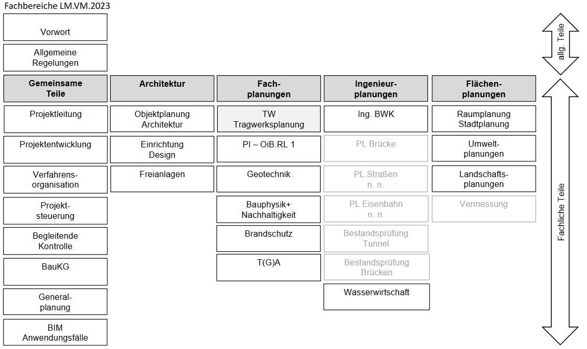
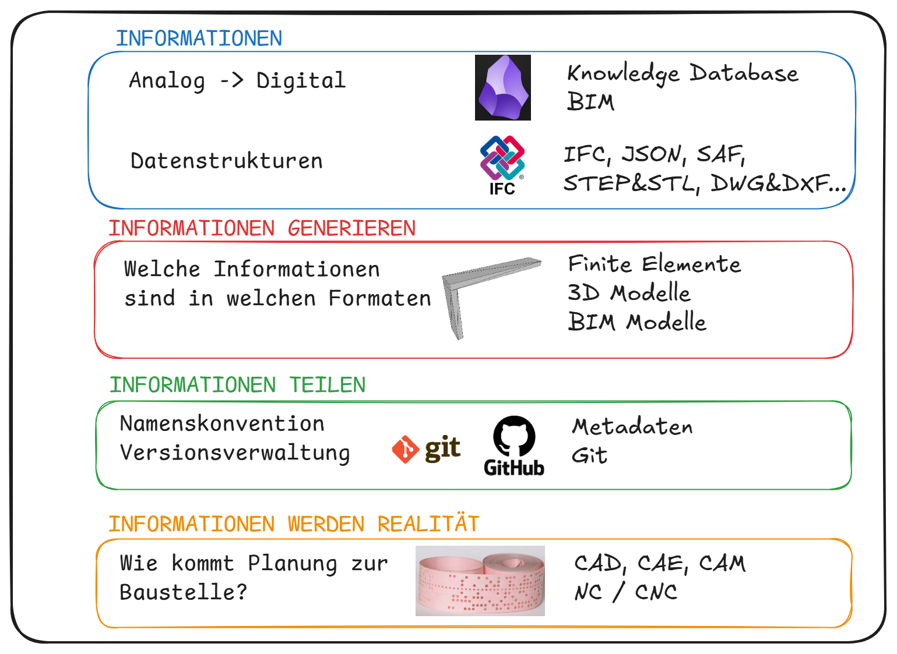
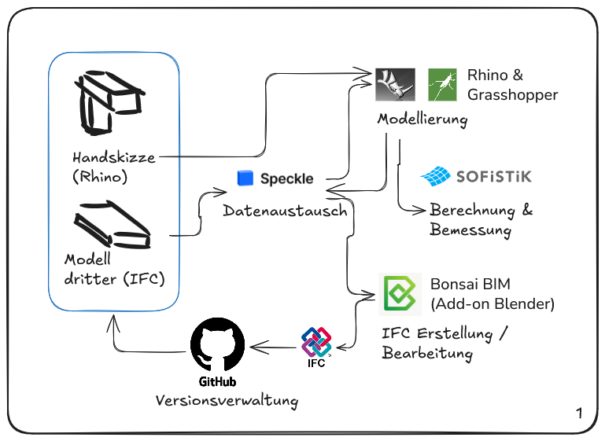

## Digitale Tragwerksplanung ### Vorlesung und Übung --- ## Was ist digitale Tragwerksplanung? - Was ist digital? <!-- .element: class="fragment" data-fragment-index="2" --> - Was ist Tragwerksplanung? <!-- .element: class="fragment" data-fragment-index="3" --> -- ## Was ist digital? - Reliability - Zuverlässigkeit <!-- .element: class="fragment" data-fragment-index="2" --> - Modularity - Modularität <!-- .element: class="fragment" data-fragment-index="3" --> - Locality - Lokalität <!-- .element: class="fragment" data-fragment-index="4" --> - Reversibility - Reversibilität <!-- .element: class="fragment" data-fragment-index="5" --> <small class="attribution">Quelle: Gershenfeld - Designing Reality</small> <!-- .element: class="fragment" data-fragment-index="5" --> -- ## Was ist Tragwerksplanung?  <figcaption style="font-size:0.6em;opacity:.7">(Bildquelle: Lechner LM.VM.2023)</figcaption> -- ## Was ist Tragwerksplanung? - Bestandteil der Fachplanung <!-- .element: class="fragment" data-fragment-index="2" --> - "Statik" <!-- .element: class="fragment" data-fragment-index="3" --> - Eng mit Objektplanung verknüpft <!-- .element: class="fragment" data-fragment-index="4" --> -- #### Was ist digitale Tragwerksplanung? ## Zuverlässigkeit Analoge Informationen -> Digitale Informationen -- #### Was ist digitale Tragwerksplanung? ## Modularität Zerlegen der Planung, Bauwerke, Bauteile in kleinere Teile die aber leicht verknüpft werden können -- #### Was ist digitale Tragwerksplanung? ## Lokalität Informationen müssen auch von "unten" nach "oben" fließen können -- #### Was ist digitale Tragwerksplanung? ## Reversibilität Änderungen und Korrekturen sind möglich (und leicht zu implementieren und kommunizieren) --- ## Aufbau der LVA (VO u. UE) 1. Informationen Erheben und Strukturieren <!-- .element: class="fragment" data-fragment-index="2" --> 2. Informationen generieren <!-- .element: class="fragment" data-fragment-index="3" --> 3. Informationen teilen <!-- .element: class="fragment" data-fragment-index="4" --> 4. Informationen werden Realität <!-- .element: class="fragment" data-fragment-index="5" --> -- #### Ablauf Vorlesung  -- #### Ablauf Übung 